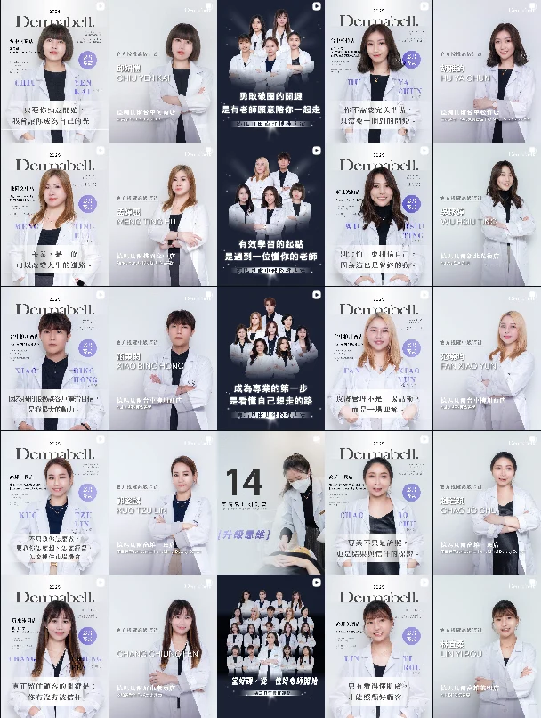

PROJECTS
從品牌建置、內容轉譯到流程整合，讓商業想法成為可執行的下一步。

B2B 招募 × 品牌授權
把師資授權制度轉化為清楚的招募訊息，串聯說明會、社群、官網與跨部門執行。
54.5% 意向者付款簽約轉換率
品牌內容 × B2B 溝通
整合品牌理念、會員制度與說明會內容，建立新品牌的第一階段招募溝通路徑。
27 位 確認參與說明會的潛在對象
自有渠道 × 流程建置
把分散的服務資訊整理成圖文選單、訊息流程與客服知識庫，讓品牌溝通更一致。
約 50% 新進服務人員培訓時間縮短